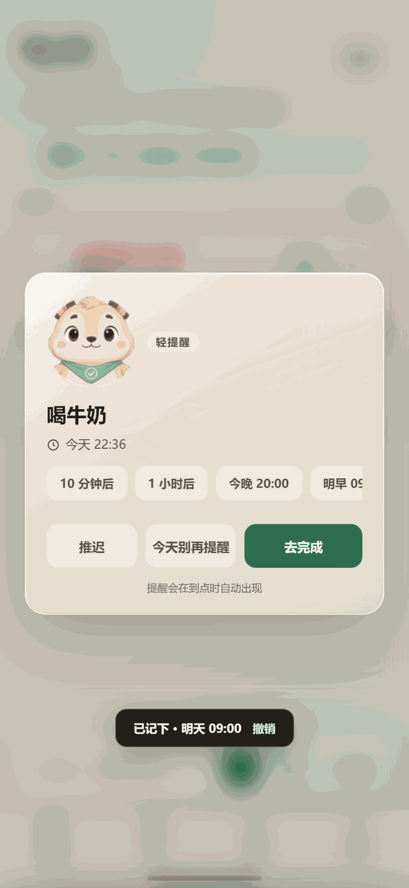

知道有哪些比赛可以报
- 想法
- 「老师群里发了，这个赛正好能拿我的课程项目去报。」
- 行为
- 在班级群、指导教师群里刷通知，点开群里转发的报名文档，带着自己做好的项目去报名。
- 接触点
- 微信班级群 / 指导教师群；群内转发的比赛通知与报名表。
- 问题
- 信息只从指导教师单点流入，不在群里就看不到；通知很快被后面的消息刷走。
- 机会
- 把群通知自动汇总成一张「全校比赛日历」——老师或学生会转发一次，即全员可见。
轻记 · 小步 —— 语音待办助手
你的待办清单，正在变成一本不敢打开的账。
小步不给你更多清单——它只挑出「现在这一件」，然后陪你走完最难的开头 5 分钟。

08 解法

这是产品在本地真实运行的一段操作：说一句 → 拆出来 → 记下 → 开始 5 分钟。
12 小布
把聊天框贴在 App 上不叫 AI。小布必须真的能写你的数据——所以我们把它做成三层，最后拍板的那层不是模型。

